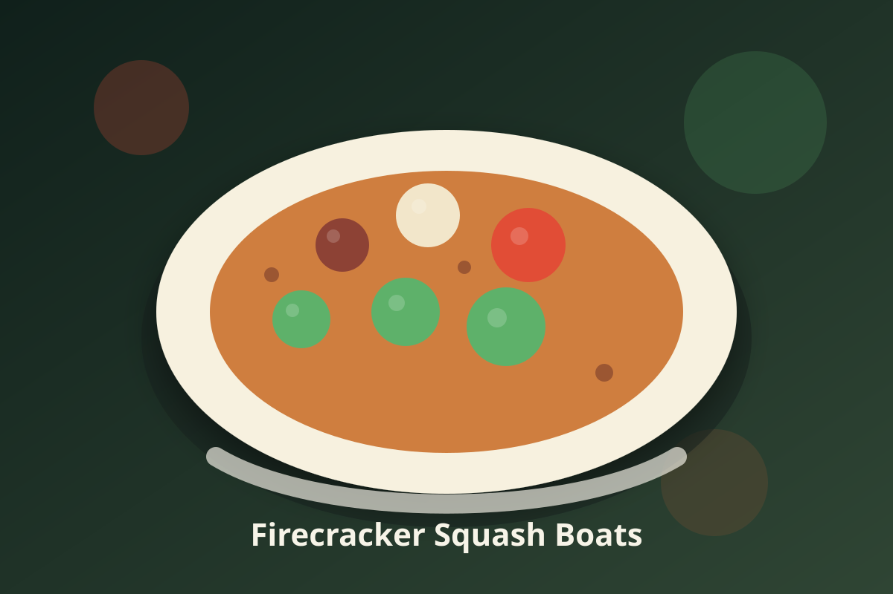

American · Vegetarian
Firecracker Squash Boats
This dish combines tender spaghetti squash stuffed with a flavorful mixture of black beans, zucchini, brown rice pilaf, and topped with a spicy sauce. The whole meal is cooked in an Instant Pot for maximum convenience.

Ingredients
- 2 cups brown rice, uncooked, unprocessed
- 2 1/2 cups water, for the rice
- 1/4 cup fresh parsley, chopped
- 1 teaspoon ground cumin
- 1 cup water, for steaming the squash
- 2 large spaghetti squash, fresh, peeled and halved lengthwise
- 1 tablespoon olive oil
- 1 sweet onion, yellow or white, diced
- 1 red bell pepper, raw, sliced
- 1 tablespoon smoked paprika
- 2 teaspoons chili powder
- 1/2 teaspoon red pepper flakes
- 2 zucchinis, raw, diced
- 1 can black beans, drained and rinsed
- 1/2 cup vegetable broth
- 1 teaspoon salt, plus more to taste
- 1/2 cup coconut milk
- 2 tablespoons lime juice
- 1 tablespoon soy sauce or tamari
Instructions
- Rinse 2 cups brown rice until the water runs clear. Add it to the Instant Pot with 2 1/2 cups water and a pinch of salt.
- Lock the lid and pressure cook the rice on High for 22 minutes. Let the pressure release naturally for 10 minutes, then press the Venting button for Quick Release and open the lid.
- Fluff the rice and toss it with the parsley, 1 teaspoon ground cumin, and salt to taste. Set the pilaf aside and rinse the pot.
- Rinse the spaghetti squash halves and pat dry. Add 1 cup water to the pot, set in the trivet, and place the squash on it cut side up. Work in batches if needed.
- Pressure cook the squash on High for 5 minutes. Let the pressure release naturally for 10-15 minutes, then press the Venting button for Quick Release and open the lid.
- Check the squash: a skewer should slide in and out easily. Lift the halves onto a lined plate, then remove the trivet and pour out the water.
- Switch to Sauté (medium). Heat 1 tablespoon olive oil and cook the onion until soft and translucent, about 5 minutes.
- Add the bell pepper and cook until soft and lightly charred, 3-4 minutes. Stir in the smoked paprika, chili powder, and red pepper flakes and toast them for 1 minute until fragrant.
- Stir in the zucchini, black beans, 1/2 cup vegetable broth, and 1 teaspoon salt. Lower Sauté to low and simmer the filling uncovered for 8-10 minutes, stirring often, until the liquid the zucchini releases has cooked off and the filling is thick. Taste, add more salt if needed, and press Cancel.
- Fluff the squash strands with a fork and spoon the filling into the halves. Serve with the rice pilaf on the side.
- For the sauce, whisk 1/2 cup coconut milk, 2 tablespoons lime juice, and 1 tablespoon soy sauce or tamari. Drizzle over the squash.